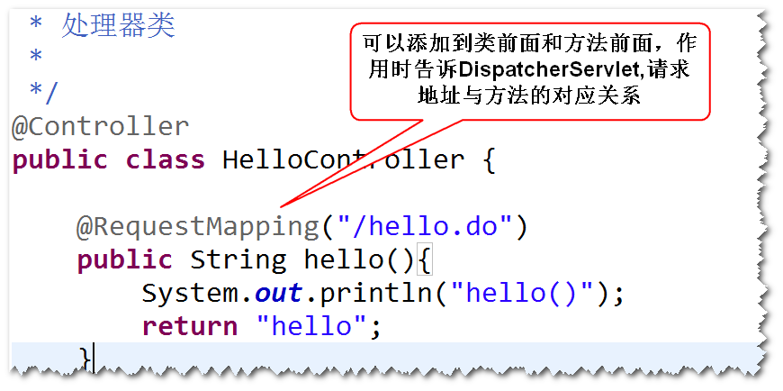
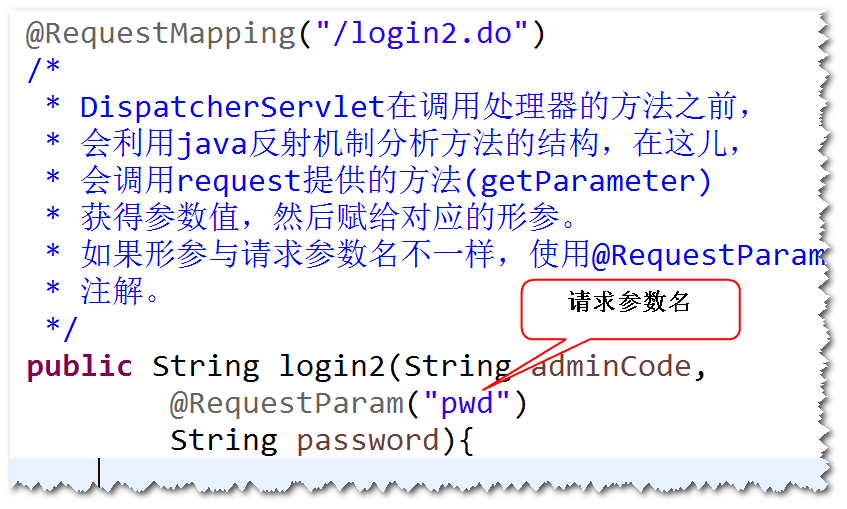
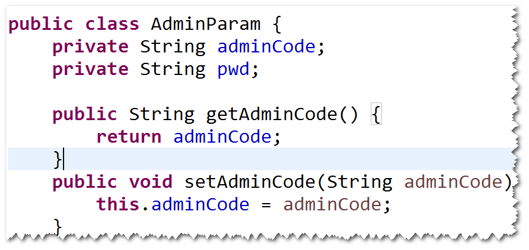
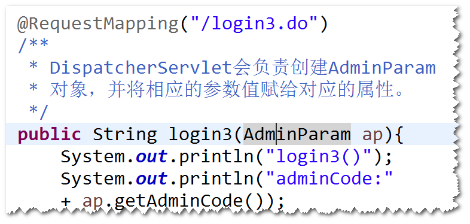
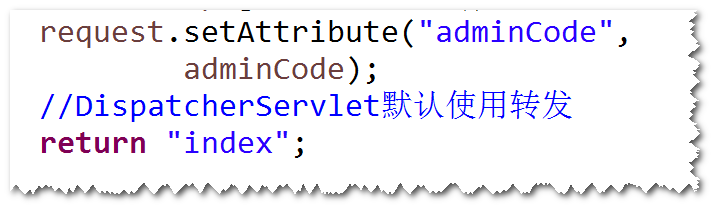
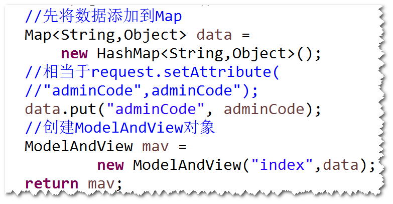
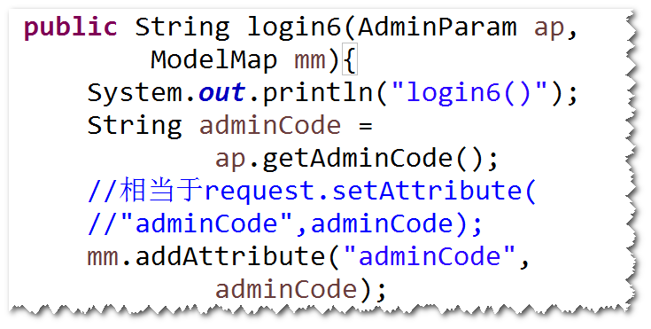
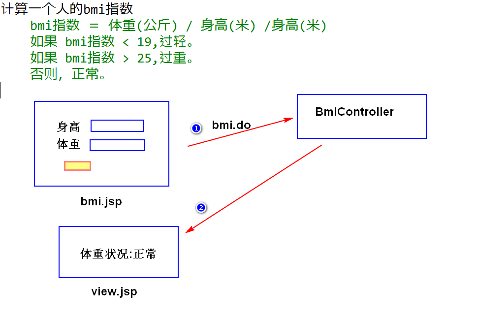
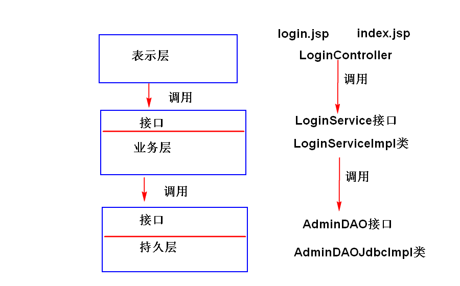

step1. 导包。
spring-webmvc。
step2. 添加spring配置文件。
step3. 配置DispatcherServlet。
step4. 写Controller。
要求:
a. 不用实现Controller接口。
b. 方法名不做要求，方法的返回值可以是ModelAndView,也可以是
String。
c. 可以有多个方法。
d. 使用@Controller注解（不用在配置文件当中配置bean元素了）。
e. 使用@RequestMapping注解代替HandlerMapping。

step5. 写jsp。
step6. 在配置文件当中，配置ViewResolver和组件扫描。

step1. 与一个java类，用于封装请求参数，要求属性名与
请求参数名一致，并且提供相应的get/set方法。

step2. 将该javabean作为方法的参数。




在重定向地址前添加"redirect:"即可，比如:
return "redirect:toIndex.do";
比如:
RedirectView rv = new RedirectView("toIndex.do");
ModelAndView mav = new ModelAndView(rv);

可以将整个系统分成表示层，业务层和持久层。
其中：
表示层：数据的展现和用户操作的界面，此外，还要负责请求分发。
注：表示层需要调用业务层的服务。
表示层应该通过接口来调用业务层的服务。
业务层：业务逻辑的处理。
注：业务层如果需要访问数据库，需要调用持久层的服务。
业务层应该通过接口来调用持久层的服务。
持久层：数据库操作。
